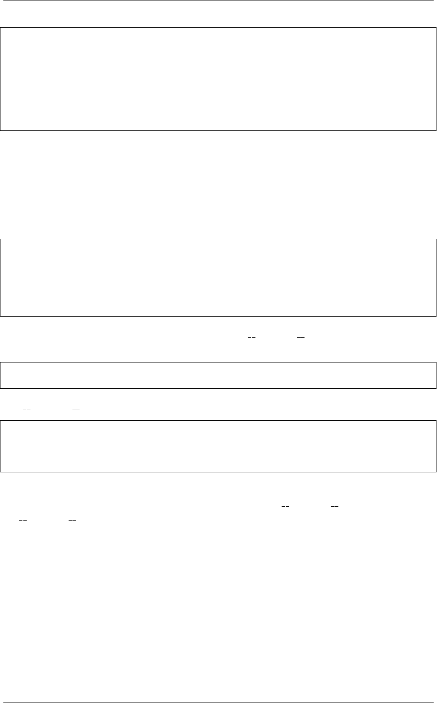

《Python Cookbook》第三版, Release 2.0.0
countdown 0.008917808532714844
>>> countdown.__name__
'countdown'
>>> countdown.__doc__
'\n\tCounts down\n\t'
>>> countdown.__annotations__
{'n': <class 'int'>}
>>>
11.2.3 讨论
在编写装饰器的时候复制元信息是一个非常重要的部分。如果你忘记了使用
@wraps ，那么你会发现被装饰函数丢失了所有有用的信息。比如如果忽略 @wraps
后的效果是下面这样的：
>>> countdown.__name__
'wrapper'
>>> countdown.__doc__
>>> countdown.__annotations__
{}
>>>
@wraps 有一个重要特征是它能让你通过属性 wrapped 直接访问被包装函数。例
如:
>>> countdown.__wrapped__(100000)
>>>
wrapped 属性还能让被装饰函数正确暴露底层的参数签名信息。例如：
>>> from inspect import signature
>>> print(signature(countdown))
(n:int)
>>>
一个很普遍的问题是怎样让装饰器去直接复制原始函数的参数签名信息，如果想自
己手动实现的话需要做大量的工作，最好就简单的使用 wrapped 装饰器。通过底层
的wrapped 属性访问到函数签名信息。更多关于签名的内容可以参考 9.16 小节。
11.3 9.3 解除一个装饰器
11.3.1 问题
一个装饰器已经作用在一个函数上，你想撤销它，直接访问原始的未包装的那个函
数。
11.3. 9.3 解除一个装饰器 304